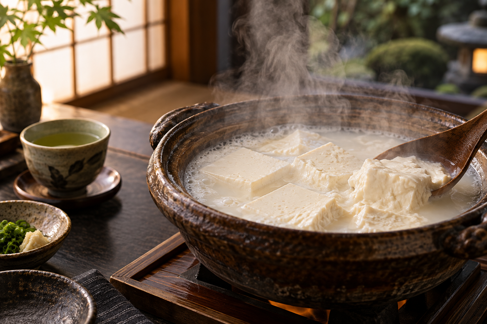

温泉水が豆腐をほどく
嬉野温泉の成分が豆腐のたんぱく質に働き、角がほどけるようにやわらかくなります。やがて煮汁も白く、とろりと変化します。

Ureshino, Saga / Local food guide
温泉水が豆腐をほどき、白いスープに変えていく。嬉野でしか出会えない一椀を、いまいる場所から探せます。
Choose your moment
旅の予定から選ぶと、条件に合うお店へそのまま絞り込みます。59件の公開情報を、出典と一緒に案内します。
From the table
店名と場所が確認できた公式SNS投稿だけを掲載。画面に入った投稿から読み込みます。
Why it melts
嬉野温泉の成分が豆腐のたんぱく質に働き、角がほどけるようにやわらかくなります。やがて煮汁も白く、とろりと変化します。
旅館の朝食から町の食堂まで、それぞれの豆腐、ごまだれ、薬味で受け継がれてきた嬉野の郷土料理です。
価格や営業時間には確認元を表示。変わった情報や新しい投稿は、誰でも知らせることができます。